Sapporo
Sapporo · Hokkaido
Sapporo
Highlighted on the Hokkaido map.
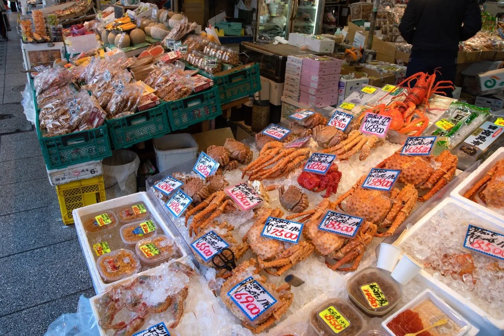
Stay
リージョニアbyクインテッサ 札幌駅前
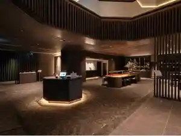
Riijonia By Kuintessa Sapporoeki Mae ( 2026 Nen 6 Gatsu 1 Higai Gyou )
ＪＲイン札幌北２条
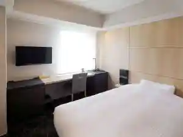
J R In Sapporo Kita 2 Jou
クロスホテル札幌（オリックスホテルズ＆リゾーツ ）
Kurosuhoteru Sapporo ( Orikkusuhoteruzu & Rizootsu )
ザ ロイヤルパーク キャンバス 札幌大通公園
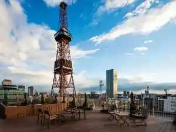
Za Roiyarupaaku Kyanbasu Sapporo Oodoori Kouen
ニューオータニイン札幌
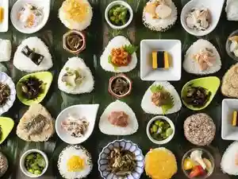
Nyuuootaniin Sapporo
ＫＯＫＯ ＨＯＴＥＬ 札幌駅前
K O K O H O T E L Sapporoeki Mae
アパホテル〈TKP札幌駅前〉
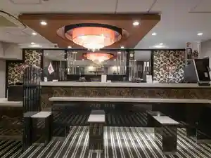
Apahoteru < Tkp Sapporoeki Mae >
ホテルモントレエーデルホフ札幌
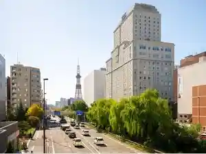
Hoterumontoreeederuhofu Sapporo
ホテル法華クラブ札幌
Hoteru Hokke Kurabu Sapporo
ホテル時計台
Hoteru Tokeidai
リッチモンドホテル札幌駅前
Ritchimondohoteru Sapporoeki Mae
ワシントンR&Bホテル札幌北３西２
Washinton R&B Hoteru Sapporo Kita 3 Nishi 2
Dining
すき焼 しゃぶしゃぶ 牛のいしざき
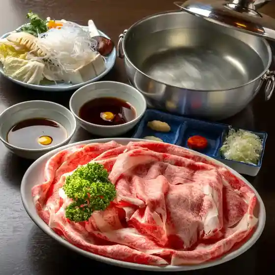
Suki Yaki Shabushabu Ushi Noishizaki
すすきの焼肉きらく
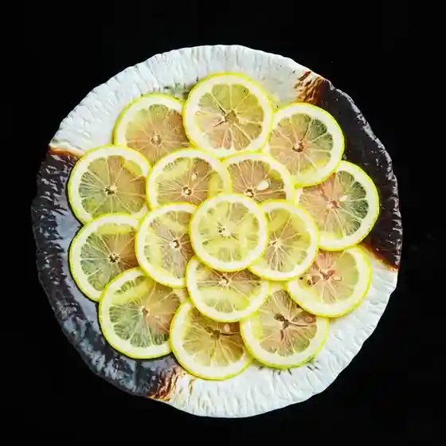
Susukino Yakiniku Kiraku
PIZZA ＆ Cheese RITORNO
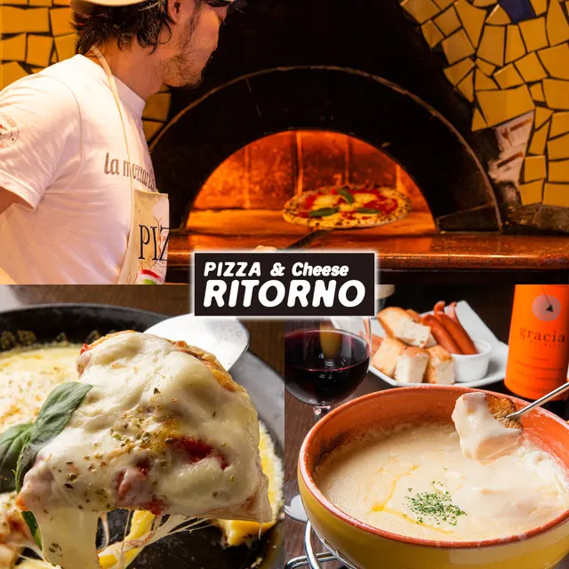
Pizza & Cheese Ritorno
イタリアンダイニング グラッツェ 南３条店
Itariandainingu Gurattsue Minami 3 Jou Mise
ウィズバー
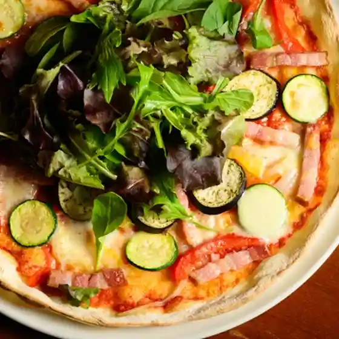
Uizubaa
松尾ジンギスカン すすきの4・2店
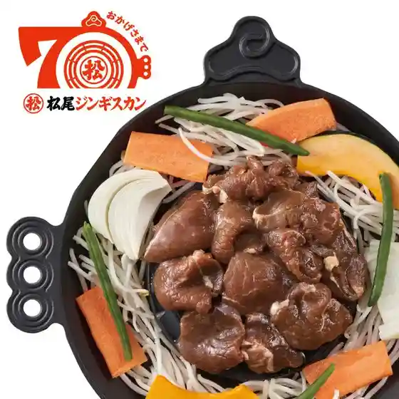
Matsuo Jingisukan Susukino 4 2 Mise
焼肉まる笑 札幌伏見店
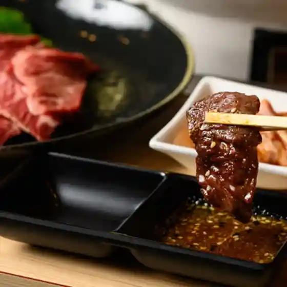
Yakiniku Maru Warai Sapporo Fushimi Mise
出汁と土鍋ご飯 福笑い
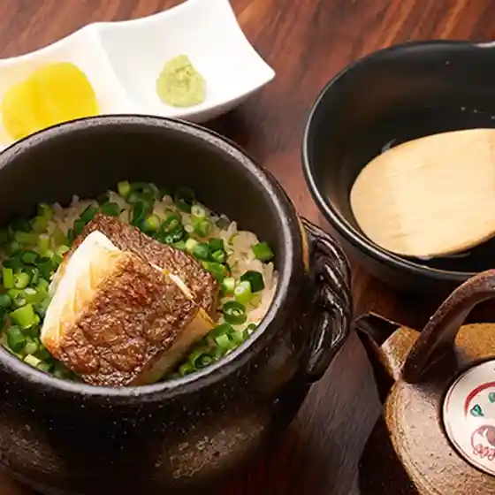
Dejiru To Donabe Go Meshi Fuku Warai
鉄板焼 漆
Teppanyaki Shitsu
SALT MODERATE
Salt Moderate
Osteria Da Boo.
Osteria Da Boo .
お料理とお酒 実りや
O Ryouri Too Sake Minori Ya
海へ アスティ店
Umi He Asutei Mise
海鮮炭焼厨房 笑○
Kaisen Sumiyaki Chuubou Warai ○
かにと道産料理 雪華亭
Kanito Dousan Ryouri Yuki Katei
うなぎ二葉
Unagi Futaba
焼き鳥と熟成牛タン 逸鳥逸舌 すすきの店
Yakitori To Jukusei Gyuutan Itsu Tori Itsu Shita Susukino Mise
Sights
Nijo Market
Nijo Market
Nijo Market, a central Sapporo seafood and produce market district run by the Nijo Fish Town merchants association.
Sapporo Tokeidai
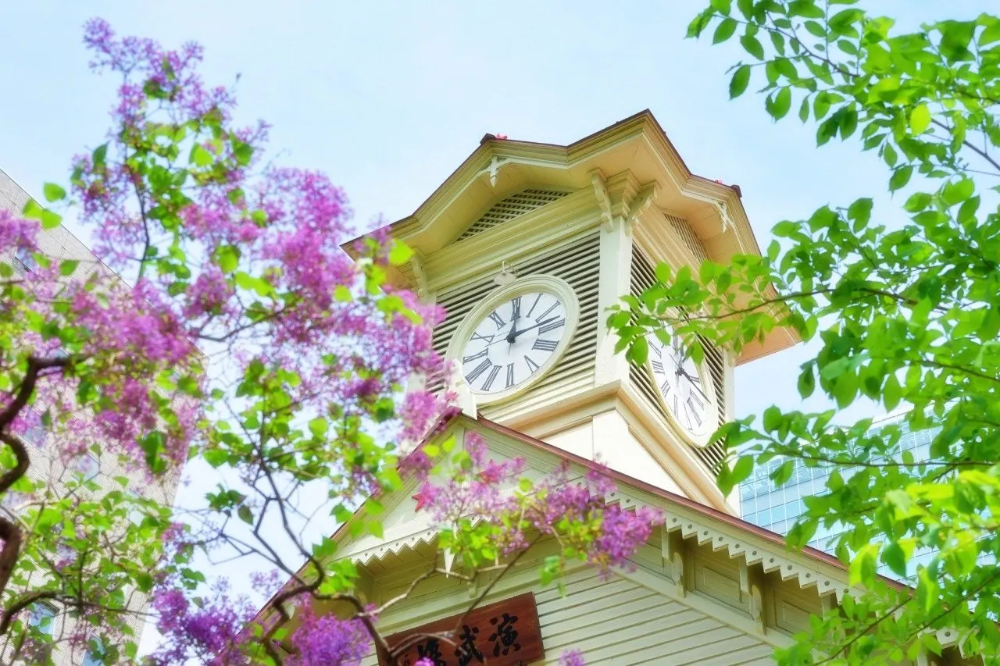
Sapporo Tokeidai
Sapporo Clock Tower, a wooden landmark at North 1 West 2, Chuo-ku, and a major city tourist attraction.
Sapporo Chuo Wholesale City Market Outer Market
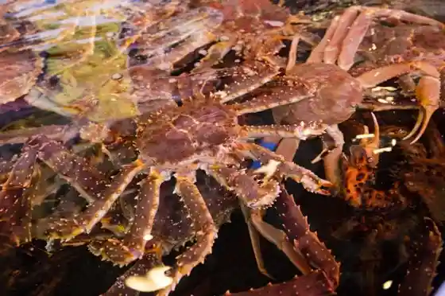
Sapporo Chuo Oroshiuri City Ba Jogai Market
Odori Park
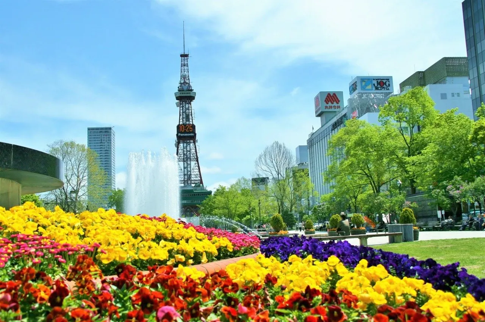
Odori Park
Odori Park, the long central park corridor through downtown Sapporo used for festivals and green space.
Sapporo Maruyama Zoo
Sapporo Maruyama Zoo
Horo Ken Pass Lavender Garden
Horo Ken Toge Rabenda Sono
Sapporo Hitsujigaoka Lookout
Sapporo Hitsujigaoka Lookout
Hitsujigaoka Observation Hill in Toyohira-ku, known for its William S. Clark bronze statue and city views.
Hokkaido Prefectural Modern Art Museum
Hokkaido Prefectural Kindai Art Museum
Moyuk SAPPORO
Moyuk SAPPORO
Tenjin Mountain Green Space (Tenjin Fuji)
Tenjin Mountain Ryokuchi (Tenjin Fuji)